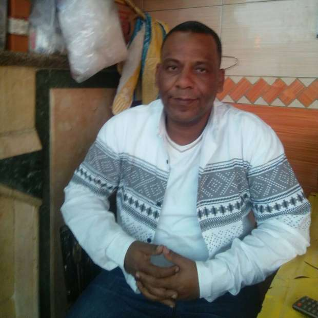

أحدث الأخبار
- القضاء الإداري يقضي بحل اتحاد الكرة وبطلان الانتخابات الأخيرة
- مقتل 3 أشخاص وإصابة 3 آخرين في حادث مروري بالبحيرة
- وزير الخارجية يجري اتصالاً مع رئيس المجلس الرئاسي الليبي
- عاصمة مصر تتجه لزيادة سكانية نصف مليون العام الجاري
- باولو يقود هجوم الزمالك أمام رينجرز في دوري الأبطال
- المالية تعفي المطاعم غير السياحية من ضريبة القيمة المضافة بشروط
- "القضاء الإداري" يلزم الجامعة الأمريكية بتحصيل مصروفاتها بالجنيه المصري
- البورصة ترتفع بنسبة 0.52% في نهاية التعاملات
صاحب بلاغ ريجيني: خريج إعلام ترك الصحافة وحرَّكته الشكوك
قال رئيس نقابة الباعة الجائلين بغرب القاهرة، محّمد عبد الله، والذي تقدّم ببلاغ ضد طالب الدكتوراه الإيطالي جوليو ريجيني قبل مقتله أوائل العام، إنه تقدم بالبلاغ بسبب شكوك ساورته بشأن أسئلة ريجيني الذي أجرى مقابلة معه.
وتابع عبد الله في تصريحات لأصوات مصرية، أنه تقّدم بالبلاغ من منطلق غيرته على بلده ووطنه، وبعدما شعر بأن الأسئلة التي يوجهها له ريجيني"غير منطقية" ولا تتعلق برسالة دكتوراه كما قال له، وإنما "لها أهداف أخرى"، على حد وصفه.
لكن عبد الله رفض الكشف عن تفاصيل في هذا الشأن.
واختفى ريجيني يوم 25 يناير الماضي الموافق الذكرى الخامسة لثورة يناير وسط تشديدات أمنية في القاهرة وعثر على جثته وبها آثار تعذيب ملقاة على جانب طريق مصر- إسكندرية الصحراوي، وثارت مزاعم عن تورط أجهزة أمنية في الأمر، وهو ما نفته مصر تماما.
وعقد ممثلو النيابة في مصر وإيطاليا ثلاث لقاءات لمتابعة القضية وسط اتهامات إيطالية بعدم تعاون مصر في التحقيق في مقتل طالب الدكتوراه الإيطالي الذي كان يجري أبحاثا عن النقابات العمالية في مصر.
وأصدرت النيابة العامة بياناً رسمياً الجمعة الماضي، قالت فيه إن الشرطة المصرية أجرت تحريات عن أنشطة ريجيني قبل اختفائه، بناء على بلاغ قدمه رئيس النقابة المستقلة للباعة الجائلين في السابع من يناير الماضي، ويحتوي على معلومات خاصة به.

وقال عبد الله، الذي يشغل منصب رئيس شعبة الباعة الجائلين بالنقابة العامة لعمال التجارة، "ساعدت الكثيرين من الراغبين في عمل أبحاث عن الباعة الجائلين. أنا تخرجت من كلّية إعلام القاهرة قسم الصحافة عام 1996 وأتفهم هذا العمل جيداً، إلا أن أسئلة ريجيني لم تكن حول قصة الباعة الجائلين أو منشأهم أو ما يتعلق بحياتهم وإنّما خرجت عن الموضوع الأساسي وكان لها أهداف أخرى".
وأضاف "كنت أعمل بجريدة النبأ وكنت أتقاضى أنا وزملائي مرتبات ضعيفة جدا ورفضت نقابة الصحفيين في الوقت نفسه انضمامنا إليها.. رأيت أن المهنة بها مشقة كبيرة وغير مجدية مادياً فتركت العمل بالجريدة في عام 2007 تقريباً".
وتابع أنّه اتجه بعد اعتزاله الصحافة إلى مهنة البيع والشراء، وساعده على ذلك أن أبيه وجده كانا بائعين إضافة إلى أن عائلته لها تاريخ طويل مع هذه المهنة.
وأوضح عبد الله أنّه تقدّم ببلاغه ضد ريجيني إلى الشرطة، والتي قامت بعد ذلك بإجراء تحرياتها مع النيابة العامة حول أنشطته.
وذكر أنّه قدّم إلى النيابة العامّة ما وصفه بأوراق رسمية تثبت ما يقوله، لكنّه لن يستطيع الإفصاح عنها لأنها محل تحقيق النيابة ووحدها لها الحكم فيها، مضيفاً أنّ من ضمن ما رآه مثيراً للشكوك رغبة ريجيني في عقد ورشة عمل عن الباعة الجائلين بتمويل أجنبي.
وقال "إحنا مصريين شرفاء.. أنا مش مرشد وقناعتي إني بدافع عن البلد.. ده استهداف خارجي.. الشرطة بتاعتنا مقتلتش ريجيني واللي موّتته جهات خارجية".
وأضاف "البعض يتهمني بأنني بلّغت ضده لأنني كنت أرغب في الحصول منه على أموال لكن هذا كذب وافتراء.. فعلت ذلك لأن أسئلته كانت غير منطقية".
ما هي قصّة نقابة الباعة الجائلين ؟
الأوضاع التنظيمية للباعة الجائلين في مصر مرّت بمسارات مختلفة لجمعهم في كيان خدمي موحّد، بداية من نقابات صغيرة ومفتتة وصولاً إلى العمل تحت مظلة شعبة رسمية بالنقابة العامة لعمال التجارة، والانضمام لاتحاد عمّال مصر.
يروي عيد عبد الجواد سيد، أمين عام شعبة الباعة الجائلين بالنقابة العامّة لعمّال التجارة، لأصوات مصرية، قصّة انضمام نقابات الباعة الجائلين إلى مظلة تلك النقابة لتأخذ الطابع الرسمي. ويقول "بدأت نقابات الباعة الجائلين في بعض المحافظات تظهر في السنوات التالية لثورة يناير، لم ننجح في إنشاء نقابة عامة للباعة على مستوى الجمهورية لأنه كان من الصعب جمعهم."
وأضاف "على مستوى القاهرة، الأمر بدأ بنقابة أنشئت عام 2012 وترأسها أحمد حسين الذي كان له فضل في نشر الفكرة، إلا أن الخلافات تصاعدت بينه وبين بعض أعضاء النقابة، فعقدوا جمعية عمومية وانشقوا إلى نقابات صغيرة منها نقابة غرب القاهرة التي يترأسها محمّد عبد الله ونقابة الجيزة ومصر الجديدة وغيرها".
تولّى عبد الله رئاسة نقابة غرب القاهرة في عام 2014، وبعد فترة استطاعت النقابات المتفرقة للباعة الانضمام إلى النقابة العامّة لعمال التجارة التي أنشأت شعبة للباعة الجائلين، وفي شهر يونيو الماضي شاركت الشعبة في اجتماع تحضيري بين النقابات واتحاد عمال مصر للعمل تحت مظلته، وهو ما حدث بالفعل بعد قبول طلب انضمامها.
وقال عبد الجواد "رغم ذلك لم تكن تلك المرّة الأولى التي يوجد فيها كيان يجمعنا، إذ كانت هناك الرابطة العامّة للباعة الجائلين منذ سنوات".
وأضاف أن نقابات الباعة الجائلين لا تشبه النقابات الأخرى، إذ لم تحظ بدعم مادّي أو بأسس تنظيمية، إضافة إلى ذلك فهي لا تحصّل اشتراكات من أعضائها، أما حين تكوّنت شعبة الباعة بنقابة عمّال التجارة، أصبحوا يدفعون اشتراكاً يبلغ 24 جنيهاً سنوياً.
وتابع "نحن كشعبة ونقابات نهدف الآن إلى التوسّط لحل الشجار اليومي بين المسئولين والباعة الجائلين، نتطلّع أيضاً إلى اقامةأسواق لهم وتقديم تأمين صحي وعلاجهم بمصروفات مخّفّضة وغيرها من الخدمات التي يمكن أن تقدمها نقابة لأعضائها".
ويقول محمد عبد الله إن عدد أعضاء شعبة الباعة الجائلين بالنقابة العامة لعمال التجارة حوالي 9 آلاف عضو، وهو عدد قليل مقارنة بعدد الباعة الجائلين في مصر، حسب قوله.
ويضيف أن عدد أعضاء نقابة الباعة الجائلين بغرب القاهرة التي يترأسها يقدر بنحو 3 آلاف عضو، و1250 تقريباً بشمال القاهرة، و350 في مصر الجديدة، إضافة إلى النقابات الأخرى في المحافظات.


{kind=link}
تعليقات الفيسبوك